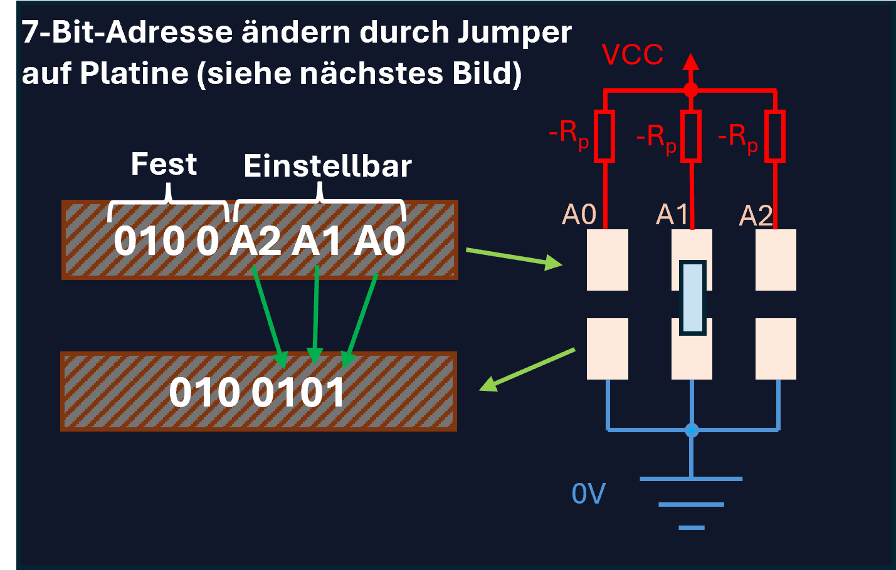
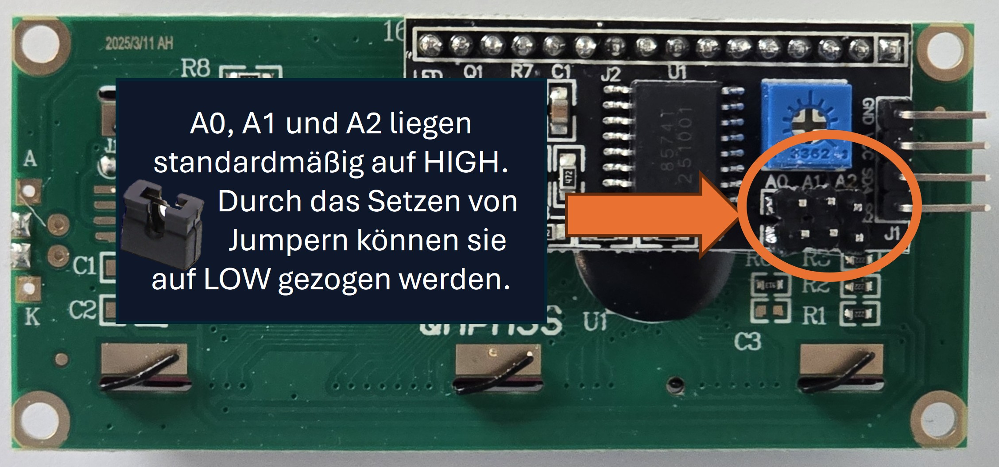
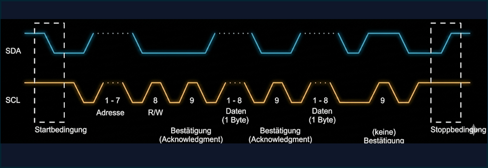
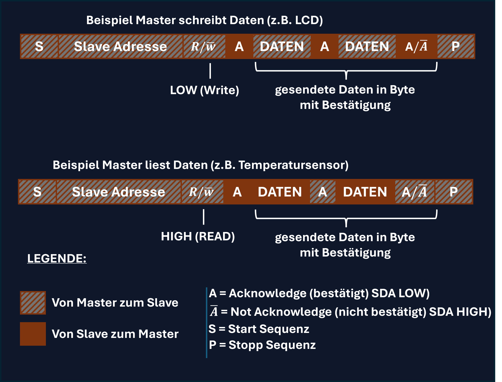

Was ist eigentlich I²C?
I²C (Inter-Integrated Circuit) ist ein serieller Datenbus, der von Philips in den 1980er Jahren entwickelt wurde und von heute von NXP verwaltet wird. Er dient der Kommunikation zwischen verschiedenen Komponenten.
Als Elektroniker ist dieser Bus ein wichtiges Mittel. Warum? Weil Sie statt 8 oder mehr Leitungen für ein Display nur noch genau zwei Signalleitungen benötigen:
-
SDA (Serial Data): Die Datenleitung. Hier werden die Infos, wie Adresse und Infos gesendet.
-
SCL (Serial Clock): Die Taktleitung. Sie gibt an wann die Pegel gelesen werden. Steigene Flanke bedeutet SDA Pegal lesen.
Verkaufsargument: Mit unseren I²C-Displays sparen Sie wertvolle GPIO-Pins an Ihrem Mikrocontroller für mehr Sensoren oder Aktoren!
HD44780 Parallel
Bis zu 10 Pins belegt!
Visionary I²C
Nur 2 Pins belegt!
Die Hardware-Ebene: Wie es elektrisch funktioniert
Open-Drain und Pull-up Widerstände
Als angehende Systemelektroniker müssen Sie wissen, was elektrisch auf dem Bus passiert. I²C verwendet eine Open-Drain (bei FETs) oder Open-Collector (bei Bipolartransistoren) Architektur.
Das bedeutet: Ein Busteilnehmer (Mikrocontroller oder unser Display) kann die Leitung nur auf Masse (LOW) ziehen. Er kann sie nicht aktiv auf VCC (HIGH) schieben.
Wichtig für die Praxis!
Damit der Bus im Ruhezustand auf HIGH-Pegel liegt, sind zwingend Pull-up Widerstände (Rp) gegen VCC erforderlich (meist 4,7 kΩ bis 10 kΩ, abhängig von der Bus-Kapazität und Geschwindigkeit).
WICHTIG: Unsere Visionary Displays haben die Pull-up Widerstände schon auf der Rückseite verlötet!


Adresseinstellung in der Praxis
Was passiert, wenn Sie zwei gleiche Displays oder Sensoren an denselben I²C-Bus anschließen möchten? Da jedes Gerät ab Werk auf eine specific Adresse hört, gäbe es einen Konflikt (Datenkollision).
Die Lösung: Fast alle I²C-Module bieten die Möglichkeit, die Basisadresse Hardware-seitig anzupassen. Meist geschieht dies über Lötbrücken (Solder Jumper) oder Steck-Jumper mit den Bezeichnungen A0, A1 und A2.
Beispiel anhand des Bildes:
Die 7-Bit-Adresse besteht aus einem festen Teil (0100) und den einstellbaren Pins (A2 A1 A0). Sind keine Jumper gesetzt, werden die Pins über Pull-up-Widerstände auf HIGH (1) gezogen. Setzt man einen Jumper, wird der Pin auf Masse (0V) gezogen und ist LOW (0).
Die Umrechnung (Hex): Teilt man die 7 Bits von rechts auf, um sie in Hexadezimal umzuwandeln, nutzt man einen 4er- und einen 3er-Block. Bei der Standardadresse 0x27 ist die 2 = 010 und die 7 = 0111 (zusammen 010 0111).
Im gezeigten Bild ist der Jumper bei A1 gesetzt. A0 und A2 bleiben offen (HIGH). Die resultierende Binäradresse lautet somit 010 0101, was der Hexadezimal-Adresse 0x25 entspricht.
Die Kommunikation: Wer darf sprechen?
I²C arbeitet nach dem Master/Slave Prinzip. Im Jahr 2021 wurden in der gesamten Spezifikation die Begriffe „Master“ und „Slave“ ersetzt durch „Controller“ bzw. „Target“. Nur der Master (Ihr Mikrocontroller) generiert den Takt (SCL) und startet die Kommunikation.
Die goldene Regel der Datenübertragung
Wie wissen die ICs am Bus, wann ein Bit gültig ist? Die Regel beim I²C-Bus ist einfach: Die Datenleitung (SDA) wird immer dann gelesen, wenn die Taktleitung (SCL) auf HIGH wechselt (steigende Flanke) und während SCL auf HIGH bleibt.
Wichtig für die Prüfung:
Das bedeutet auch, dass sich der Zustand von SDA nur ändern darf, während SCL auf LOW liegt. Ändert sich SDA, während SCL auf HIGH ist, wird das nicht als Datenbit, sondern als START- oder STOPP-Bedingung interpretiert!

Startbedingung (S)
Der Controller zieht SDA auf LOW, während SCL noch HIGH ist. Das weckt alle Targets am Bus auf: "Achtung, eine Nachricht kommt!"
Adressierung
Der Controller sendet eine 7-Bit Adresse. Jedes Visionary Display hat eine eigene Adresse (Standard oft 0x27 oder 0x3F). Nur das aufgerufene Gerät hört weiter zu.
R/W Bit
Ein Bit bestimmt die Kommunikationsrichtung: Es legt fest, ob der Controller Daten an das Target schreibt (0) oder davon liest (1).
ACK (Acknowledge)
Das Target antwortet mit einem Bestätigungs-Bit (ACK = LOW), wenn es die Adresse verstanden hat und zur Kommunikation bereit ist.
Daten (Bytes)
Die eigentlichen Nutzdaten (z.B. ein Befehl oder Text für das Display) werden byteweise gesendet. Nach jedem Byte folgt erneut ein ACK.
Stoppbedingung (P)
Am Ende zieht der Controller SDA bei HIGH-SCL wieder auf HIGH. Damit wird der Bus offiziell wieder freigegeben.
Das R/W Bit: Schreiben oder Lesen?
Nach der 7-Bit Adresse folgt immer das entscheidende 8. Bit im ersten Byte: Das Read/Write-Bit. Es legt die Kommunikationsrichtung für die folgenden Datenbytes fest.
-
R/W = 0Write (Schreiben): Der Controller sendet Daten an das Target.
Beispiel: Sie senden einen Text, der auf dem LCD angezeigt werden soll. -
R/W = 1Read (Lesen): Der Controller empfängt Daten vom Target.
Beispiel: Sie fragen einen Temperatursensor am Displaymodul ab. Beim Lesen werden so lange Daten vom Target gesendet, bis der Controller mit einem NACK dem Target sagt: "Mir reichen die Daten".

Weiterführende Fragen & Praxis
Häufige Fragen aus der Praxis und ein konkretes Code-Beispiel für den Arduino.
Wie geht man mit mehreren I²C-Geräten vor?
Jedes Gerät wird parallel an die gleichen Leitungen (SDA und SCL) angeschlossen. Wichtig ist nur, dass jedes Gerät eine eindeutige Adresse (z.B. 0x27 und 0x26) besitzt. Im Code legt man dann einfach für jedes Gerät ein eigenes Objekt mit der passenden Adresse an.
Was ändert sich, wenn wir Lesen statt Schreiben wollen?
Das 8. Bit nach der Adressierung (das R/W-Bit) wird vom Controller auf 1 (HIGH) gesetzt. Ab jetzt sendet der Controller keine Daten mehr, sondern erzeugt nur noch den SCL-Takt. Das adressierte Target übernimmt die Steuerung der SDA-Leitung und taktet seine Daten zum Controller, bis der Controller mit einem NACK abbricht.
Dürfen I²C-Kabel beliebig lang sein?
Nein. I²C bedeutet "Inter-Integrated Circuit" und wurde für die Kommunikation auf einer Platine entwickelt. Je länger das Kabel, desto höher die Leitungskapazität. Das Signal "verschleift" (wird zu einem RC-Ladekurven-Matsch). Meist ist nach einigen Dutzend Zentimetern Schluss, außer man senkt die Taktrate extrem ab oder nutzt spezielle Treiber-ICs.
Braucht jedes Display eigene Pull-up-Widerstände?
Nein, die Widerstände gelten für den gesamten Bus. Wenn Sie mehrere Module anschließen, die alle fest eingelötete Pull-ups besitzen, schalten sich diese parallel. Der Gesamtwiderstand sinkt und der Strom beim "Auf-Masse-Ziehen" wird zu groß. Oft muss man bei vielen Modulen die Widerstände auf einigen Boards sogar entfernen!
#include <LiquidCrystal_I2C.h> // LCD Bibliothek
// Zwei Displays mit unterschiedlichen Adressen anlegen
LiquidCrystal_I2C lcdSpannung(0x27, 16, 2); // Standardadresse für Spannung
LiquidCrystal_I2C lcdStrom(0x26, 16, 2); // Geänderte Adresse für Strom
int Poti_Spannung = A0;
int Poti_Strom = A1;
void setup() {
// 1. Display (Spannung) initialisieren
lcdSpannung.init();
lcdSpannung.backlight();
lcdSpannung.setCursor(0, 0);
lcdSpannung.clear();
lcdSpannung.print("U: ");
pinMode(Poti_Spannung, INPUT);
lcdSpannung.print("Test!");
// 2. Display (Stromstärke) initialisieren
lcdStrom.init();
lcdStrom.backlight();
lcdStrom.setCursor(0, 0);
lcdStrom.clear();
lcdStrom.print("I: ");
pinMode(Poti_Strom, INPUT);
lcdStrom.print("Test!");
delay(5000);
// Beide Displays bereinigen und vorbereiten
lcdSpannung.clear();
lcdSpannung.print("U: ");
lcdStrom.clear();
lcdStrom.print("I: ");
delay(1000);
}
void loop() {
// Spannung messen und auf LCD 1 ausgeben
int valU = 0;
valU = analogRead(Poti_Spannung);
float voltage = valU / 20.23;
lcdSpannung.setCursor(3, 0);
lcdSpannung.print(voltage);
lcdSpannung.print(" V");
// Stromstärke messen und auf LCD 2 ausgeben
int valI = 0;
valI = analogRead(Poti_Strom);
float current = valI / 100.0; // Fiktiver Umrechnungsfaktor
lcdStrom.setCursor(3, 0);
lcdStrom.print(current);
lcdStrom.print(" A");
delay(1000);
}Live Oszilloskop-Simulator
Senden Sie ein Zeichen an unser Display und beobachten Sie den Bus.